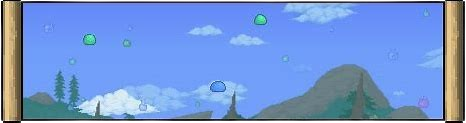

The King Slime can randomly spawn with a 1% chance under these following conditions:
It is daytime
The player is in the far outer layers of the map and is surrounded by grass
The player is on the surface
Slime Rain

The King Slime can also be spawned if 150 slimes are killed during a Slime Rain event which is signaled with the phrase "Slime is falling from the sky!"
Slime Crown
King Slime can be manually summoned using the Slime Crown at anytime of the day
Slime Crown can be crafted using the following items on a Demon/Crimson Altar
Gold/Platinum Crown
Gel x99
Honorable Exclusive Boss Drops
Slime King Trophy (10%)
Treasure bag (100%)
Royal Gel (100%)
Royal Delight (25%)
King Slime Relic (100%)
Description of Boss
King Slime takes the appearance of a much bigger version of a blue slime. It wears a gold crown on its head and in the middle of the slime with a ninja npc trapped inside